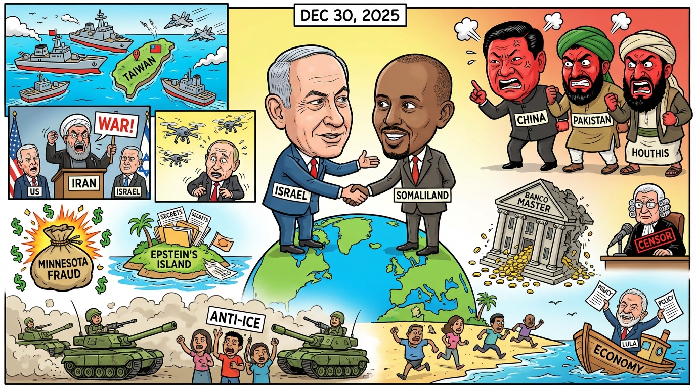

The Daily Globe: Israel's Recognition of Somaliland and Regional Backlash, Minnesota $9B Fraud Scandal, and Banco Master Collapse Scandal
Published on 2025-12-30

World
- Israel's Recognition of Somaliland and Regional Backlash
Israel's announcement of diplomatic ties with breakaway Somaliland drew fierce condemnation from China, Pakistan, Somalia, and Muslim-majority nations, who viewed it as interference in African sovereignty and a strategic move against Arab states. Houthis in Yemen threatened to target any Israeli presence there, tying into broader Gaza ceasefire fragility.
- China's Military Drills Around Taiwan ('Justice Mission 2025')
China launched large-scale live-fire exercises simulating a blockade of Taiwan, prompting Taiwan to scramble jets and causing flight disruptions for over 100,000 passengers. Critics called it an act of aggression timed to counter U.S. arms sales to Taiwan.
- Iran's 'Total War' Rhetoric and U.S./Israel Escalations
Iran's President Pezeshkian declared a 'broad conflict' with the U.S., Israel, and Europe following strikes, amid fragile Gaza talks between Trump and Netanyahu. U.S. airstrikes added to accusations of unchecked interventionism.
- Russia-Ukraine War and Syrian Clashes
Russia claimed Ukraine launched 91 drones at Putin's residence; advances in Donetsk. In Syria, deadly protests and mosque bombing highlighted Alawite-government tensions.
USA
- Minnesota $9B Fraud Scandal
Reports of up to $9 billion in fraud in Minnesota welfare/election programs, with claims of mainstream media blackout and calls for federal investigations.
- Epstein Files Release and Trump WH Controversies
Ongoing Epstein documents reignite elite cover-up debates, tied to 'Signal gate' and other Trump administration scandals.
- Anti-ICE Riots and National Guard Deployments
Trump federalized California's National Guard to quell violent anti-ICE protests in LA, Chicago, Memphis.
- Government Efficiency Plan Sparks Protests
Elon Musk-led reforms under Trump face backlash, leading to mass protests and government shutdown debates.
Brazil
- Banco Master Collapse Scandal
Liquidation of Banco Master amid accusations of financial mismanagement and ties to Central Bank corruption.
- STF Justice Alexandre de Moraes Controversies
Allegations of abuse of power, censorship, political meddling, and conflicts of interest against the Supreme Court justice.
- Homophobic Attack in Pernambuco
Gay couple assaulted on beach, sparking debates on homophobia, police corruption, and regional politics.
- Government Policies and Economic Crises
Lula's drug legalization suggestions, INSS deficits threatening pensions, anti-business policies driving capital flight.
Topic Index
- Israel-Somaliland
- Taiwan-blockade
- Iran-war
- Russia-Ukraine
- Syria-clashes
- Minnesota-fraud
- Epstein-files
- ICE-riots